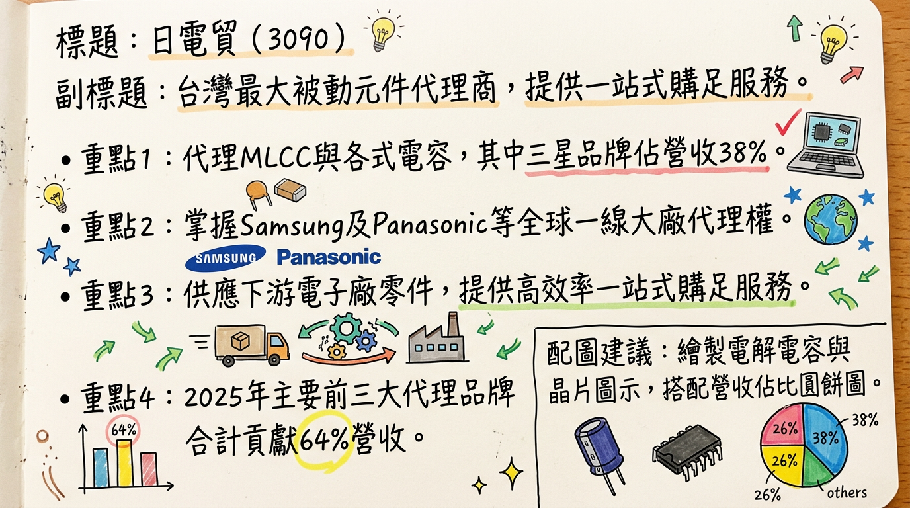
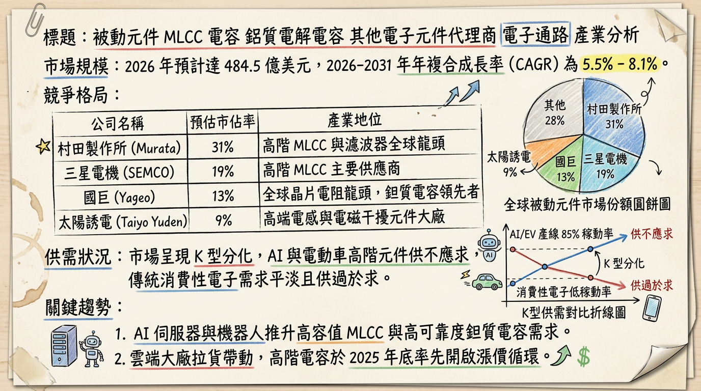
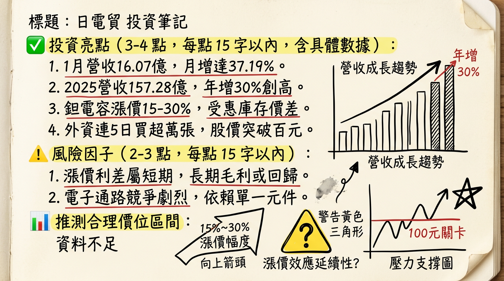

3090 日電貿 深度研究報告
一句話摘要
AI 伺服器規格升級帶動高階 MLCC 與鉭電需求爆發，結合文曄戰略結盟效益，日電貿邁入獲利高成長期。
公司概覽
日電貿（3090）為台灣最大被動元件代理商，專注於提供積層陶瓷電容 (MLCC)、電解電容、鉭質電容等一站式購足服務。公司不參與製造，具備輕資產、高營運靈活度之優勢。
2025 年營收結構（按品牌/產品線）
| 代理品牌 | 主要產品線 | 營收佔比 | 應用領域 |
|---|
| Samsung (三星電機) | MLCC | 38% | AI 伺服器、智慧手機、車用 |
| Panasonic (松下) | 高分子固態電容/鉭電 | 14% | 工控、伺服器、BBU |
| Nippon Chemi-Con | 鋁質電解/固態電容 | 12% | 電源供應器、家電 |
| KEMET (基美) | 高分子鉭質電容 | 11% | 航太、高階運算、通訊 |
| Kyocera AVX | MLCC、鉭質電容 | 8% | 車用、國防、醫療 |
| 其他 | IC、光電元件、自有品牌 | 17% | 各類電子產品 |
核心競爭優勢
一線品牌代理權： 掌握全球前五大被動元件廠（如 Samsung, Panasonic）的核心代理，在高階 AI 與車用規格具備排他性優勢。
戰略規模效益： 與文曄（3036）深度結盟（持股 36%），共享全球物流體系，降低營運成本。
利差管理能力： 在 2026 年初的原廠漲價潮中，憑藉低價庫存與高議價能力，展現顯著的獲利彈性。
財務分析
月營收趨勢表 (2025 - 2026)
| 月份 | 營收金額 (億元) | 月增率 MoM | 年增率 YoY |
|---|
| 2026/01 | 16.07 | +37.19% | +13.06% |
| 2025/12 | 11.71 | -8.74% | +30.92% |
| 2025/11 | 12.83 | -5.68% | +15.38% |
| 2025/10 | 13.61 | -3.59% | +18.67% |
| 2025/09 | 14.11 | +2.16% | +32.80% |
| 2025/08 | 13.82 | +9.90% | +22.80% |
季度數據與年度趨勢
- 2024 年度： 營收 121.4 億元，EPS 4.52 元。
- 2025 年度： 營收 157.28 億元 (YoY +29.54%)，預估 EPS 5.8 - 6.36 元。
- 2026 年度展望： 市場預期 EPS 挑戰 6.54 元。
法說會重點 (2025/12/08)
- AI 需求續強： 總經理表示 AI 伺服器對高階 MLCC 需求將延續至 2026 年，稼動率維持在 90% 以上。
- 漲價 Guidance： 代理品牌 Panasonic 鉭電容已於 2026 年 2 月調漲 15%-30%。
- 供應鏈布局： 積極擴展東南亞（越南、泰國）及印度據點，以應對地緣政治及客戶 China+1 需求。
- 營收目標： 2026 年 AI 相關業務營收佔比預期突破 20-25%。
券商觀點
| 券商名稱 | 報告日期 | 評等 | 目標價 | 2026 EPS 預估 |
|---|
| 康和證券 | 2025/12/11 | 看多 | 115 元 | -- |
| 兆豐投顧 | 2025/12/10 | 看多 | 111 元 | -- |
| CMoney/法人 | 2025/12/07 | 強力買進 | 104.6 元 | 6.54 元 |
財報深度分析
利潤率趨勢表
| 指標 | 2025 Q3 | 2025 Q2 | 2025 Q1 | 2024 Q4 |
|---|
| 毛利率 | 15.97% | 14.48% | 15.6% | 14.9% |
| 營業利益率 | 9.34% | 7.1% | 8.8% | 7.5% |
| 純益率 | 10.45% | 3.04% | 7.5% | 6.1% |
- 存貨分析： 2025 Q3 存貨周轉天數 55.76 天（低於 2024 年底 75.6 天），顯示去化極快且需求強勁。
- 資本支出： 主要投入於東南亞自動化倉儲，佔營收約 1-2%，屬低資本支出營運模式。
股權異動
文曄結盟： 2025 年底完成增資換股，文曄（3036）持股達 36%，成為最大股東，強化通路整合競爭力。
員工激勵： 2025/09 多位經理人轉讓股權至員工限制型股票信託，顯示公司致力於長期留才。
高配息政策： 持續維持 85% 以上配發率，2025 年配發 4.2 元現金股利。
產業分析
全球被動元件競爭格局 (2025-2026)
| 排名 | 公司 | 市佔率 | 優勢與日電貿關係 |
|---|
| 1 | 村田 (Murata) | ~15% | 高階技術龍頭；市場定價指標 |
| 2 | 三星電機 (SEMCO) | ~11% | 日電貿最大代理品牌；AI 產能快速擴張 |
| 3 | 國巨 (Yageo) | ~8% | 全球最大鉭電供應商；既是供應商也是競爭者 |
台灣同業財報比較 (2025 Q3)
| 公司名稱 | 營收 (億) | 毛利率 | EPS (Q1-Q3) | 業務亮點 |
|---|
| 日電貿 (3090) | 40.50 | 15.97% | 4.21 元 | AI 伺服器 & 鉭電漲價紅利 |
| 禾伸堂 (3026) | 34.33 | 18.19% | 4.88 元 | 自製高壓 MLCC、工控應用 |
| 蜜望實 (8043) | 20.11 | 9.0% | 1.52 元 | 太陽誘電代理、受惠日廠調價 |
近期催化劑
*
2026/02 漲價生效： Panasonic 鉭電容漲價直接挹注 Q1-Q2 毛利。
* AI 伺服器放量： NVIDIA GB300 等機種於 2026 H1 進入出貨高峰。
* BBU 需求： 伺服器備援電池模組對鉭電容用量翻倍。
*
匯率風險： 台幣大幅升值可能導致如 2025 Q2 之匯損。
* 缺料干擾： HBM 記憶體缺貨若導致伺服器出貨延遲，將影響拉貨節奏。
⭐ 成長動能時間軸
- 2025 Q4： 完成東南亞（越南、泰國）倉儲據點擴張，因應 China+1 趨勢。
- 2026/01： 營收衝高至 16.07 億，反映 AI 急單與農曆年前拉貨。
- 2026/02： 鉭質電容正式調漲報價 (15-30%)，獲利空間擴大。
- 2026 H1： 隨 NVIDIA 新一代架構放量，高容值 MLCC 需求預估年增 25%。
- 2026 全年： 整合文曄全球物流網絡，預計節省 5-10% 營運成本。
2026 展望
- 成長動能： AI 伺服器 48V 電源架構推升 MLCC 用量達傳統 10 倍以上；電動車滲透率提升支撐長期底氣。
- 主要風險： 終端消費性電子（PC/手機）復甦慢於預期；地緣政治關稅變動。
投資結論
AI 轉型成功： 日電貿已成功從 PC 通路轉型為 AI 供應鏈核心，2026 年 AI 營收佔比將創歷史新高。
漲價紅利可期： 鉭質電容供需失衡帶動的報價上調，將使 2026 H1 毛利率維持在 16% 以上之高檔。
結盟效益發酵： 與文曄的深度綁定提供強大後勤與跨國接單能力，評價面具備上調（Re-rating）空間。
具體建議： 2026 EPS 預估為 6.54 元，給予 16-18 倍本益比，目標價區間建議 104 - 118 元。目前股價具備防禦性（高股息）與進攻性（AI 成長）。
本報告由 AI 自動產生，資料來源為公開網路資訊，僅供參考，不構成投資建議。產生時間：2026-03-01 03:30
📊 資訊卡


